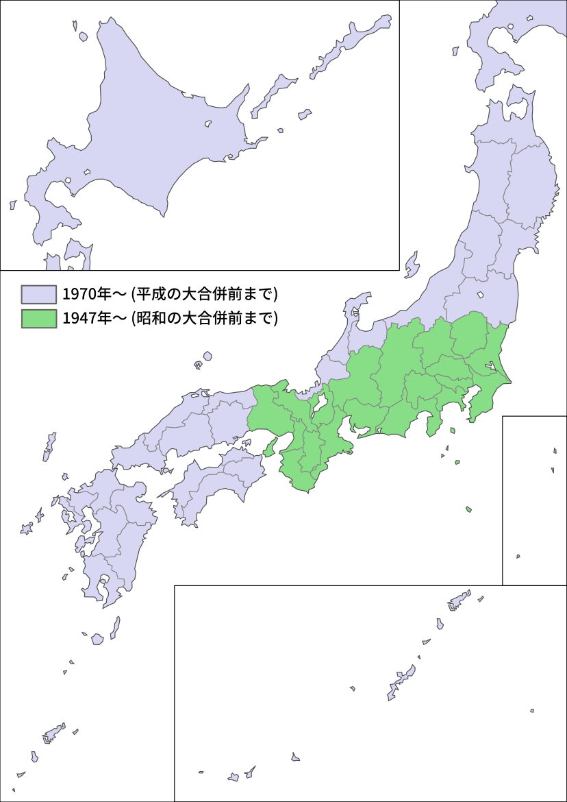

この地図について
合併などで変化した日本の市区町村の境界を時系列で確認することができるweb地図です。
画面下部のプルダウンリストから年、月を選択し「表示更新」ボタンを押すと指定した日付の市区町村境界が表示されます。
画面右上のボタンからベースマップの種類、市区町村名ラベルの表示有無、ポリゴンの色分けを選択できます。(市区町村名ラベルはズームレベル10以上で表示されます)
地図はドラッグで移動できます。マウスホイールまたは左上の+-ボタンで拡大・縮小が可能です。
地図上をクリックするとクリック位置にある市区町村の範囲が赤く表示され、市区町村の情報がポップアップ表示されます。
「2画面表示」にチェックを入れると地図が二つ表示されます。二つの地図の表示範囲は連動します。
表示可能範囲

市区町村界データは現在作成中につき一部の時期のみ表示できます。
| 1947年5月3日以降のデータを表示可能 | 茨城県、栃木県、群馬県、埼玉県、千葉県、東京都、神奈川県、山梨県、長野県、岐阜県、静岡県、愛知県、三重県、滋賀県、京都府、大阪府、兵庫県、奈良県、和歌山県 |
| 1970年4月1日以降のデータを表示可能 | 上記以外の地域 |
1969年以前の時期を選択した場合、データが整備されていない地域は灰色で表示されます。
なお、上記期間内であっても一部の境界変更などが反映されていない場合があります。
境界線凡例
青線：海岸線
薄い青線：湖岸線
赤線：都道府県境界
橙線：支庁/振興局境界(北海道)
緑線：市郡境界
水色線：同一郡内の町村境界
黄色線：政令指定都市の区境界
湖面の境界が確定している場合に限り、湖上の境界線も表示します。海上の境界線は参考です。
市区町村名ラベル
画面右上のボタンから「市区町村名ラベルを表示」を選択すると市区町村名が表示されます。(ズームレベル10以上)
市区町村名は全国で表示可能です。
ラベルは各市区町村における中心集落の周辺に表示されます。(役場位置とは限りません)
ポップアップ凡例
都道府県：その自治体が所属する都道府県名。
支庁：その自治体が所属する支庁・振興局名。(北海道・東京都島嶼部・長崎県対馬)
郡：その自治体が所属する郡名。政令指定都市の区の場合は政令指定都市名を表示。
開始：当該ポリゴンの開始年月日。未設定の場合は「-」を表示。
終了：当該ポリゴンの終了年月日。現存の場合は「-」を表示。
(上記「開始」「終了」はポリゴンの存在期間を示すもので、自治体の存在期間を示すものではありません。市町村名や郡の変更、境界変更、海岸線の変更等でもポリゴンは更新されるため、存在期間は分断されます。)
色分けについて
右上のメニューから「色分け」を選択するとポリゴンに色がつきます。
色分け(市・町・村)
市・町・村の種類ごとに色分けされます。
赤：政令指定都市および東京特別区
黄：その他の市
緑：町
紫：村
色分け(郡)
同じ郡(伊豆・小笠原諸島は支庁)に所属する町村が同じ色で表示されます。
町はやや濃い色で表示されます。郡に所属しない地域(市など)は色がつきません。
(隣接する郡は同じ色にならないよう割り振っていますが、場合によって同じ色の郡が近接する場合があるので注意してください。)
鉄道路線
メニューから「鉄道路線(1950年～)」を選択すると鉄道路線および駅を表示します。
ズームレベル10以上で駅位置を示すドットが、ズームレベル12以上で駅名ラベルが表示されます。
データは
国土数値情報の
鉄道時系列データを一部加工したものを使用しています。
各データの時間情報は年単位で整備されています。設定した月日に関わらず、設定年の年末時点での情報が表示されます。
路線の線種凡例
人口集中地区
メニューから「人口集中地区(1960年～)」を選択すると
人口集中地区(DID)の範囲を赤色で表示します。
人口集中地区は5年おき(国勢調査実施年=西暦年で5の倍数の年)に発表されます。この地図では設定した年の直近の人口集中地区データを表示します。
(例：地図の表示年月日を1970年から1974年までのいずれかの日付に設定した場合、1970年の人口集中地区データを表示します。)
データは
国土数値情報の
人口集中地区データ
(2020年のデータのみ
e-Stat:地図で見る統計の境界データ)を一部加工したものを使用しています。
注：沖縄県は1970年以降のみ表示可能です。
データについて
市区町村の境界線データは、下記資料を基に作成したものです。一部推測を含みます。
海岸線・湖岸線に関しては、5年おきの更新になっています。ただし地域・期間によってはそれよりも長い更新スパンとなっている場合があります。
参考資料
(現在編集中。主なもののみ記載)
行政界
市町村の合併情報
免責等
このデータは、はにしなが個人で作成しているものです。
内容の正確性については保証できません。
このデータを使用したことによって生じた不利益に関して、当方は一切の責任を負いかねます。
掲載内容に誤り等を発見した場合、ご連絡いただけると幸いです。
はにしな